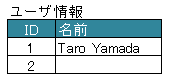

-
@Target(value={METHOD,FIELD}) @Retention(value=RUNTIME) @Documented public @interface XlsColumn
アノテーションXlsHorizontalRecordsやXlsVerticalRecordsのレコード用のクラスにおいて、 表の見出しのセルを指定し、クラスのプロパティをカラム名にマッピングします。基本的な使い方
属性
columnName()で見出しとなるセルのラベルを指定します。セルが見つからない場合はエラーとなりますが、属性
optional()を'true'とすることで無視して処理を続行します。public class SampleRecord { @XlsColumn(columnName="ID") private int id; @XlsColumn(columnName="名前") private String name; // 存在しない列の場合は読み飛ばす @XlsColumn(columnName="備考", optional=true) private String name; }基本的な使い方
データの列が結合されている場合
同じ値がグループごとに結合されているカラムの場合は属性
merged()をtrueに設定します。
こうしておくと、前の列の値が引き継がれて設定されます。書き込み時では、属性
merged()の値が `true` であっても、上部または左側のセルと値が同じでも結合は基本的に行いません。
ただし、システム設定XlsMapperConfig.setMergeCellOnSave(boolean)の値をtrueに設定することで結合されます。public class SampleRecord { @XlsColumn(columnName="ID") private int id; // 結合されてる可能性がある列 @XlsColumn(columnName="クラス", merged=true) private String className; @XlsColumn(columnName="名前") private String name; }
データの列が結合されている場合
見出し行が結合されている場合
見出し行が結合され、1つの見出しに対して複数の列が存在する場合は属性
headerMerged()を使用します。
属性headerMerged()の値には列見出しから何セル分離れているかを指定します。
属性columnName()で指定する見出しのセル名は、結合されているセルと同じ値を指定します。public class SampleRecord { @XlsColumn(columnName="ID") private int id; @XlsColumn(columnName="名前") private String name; @XlsColumn(columnName="連絡先") private String mailAddress; / 結合されている見出しから離れている数を指定する @XlsColumn(columnName="連絡先", headerMerged=1) private String tel; }
見出し行が結合されている場合
見出しを正規表現、正規化して指定する場合
シートの構造は同じだが、ラベルのセルが微妙に異なる場合、ラベルセルを正規表現による指定が可能です。
また、空白や改行を除去してラベルセルを比較するように設定することも可能です。正規表現で指定する場合、アノテーションの属性の値を
/正規表現/のように、スラッシュで囲みます。- スラッシュで囲まない場合、通常の文字列として処理されます。
- 正規表現の指定機能を有効にするには、システム設定のプロパティ
XlsMapperConfig.setRegexLabelText(boolean)の値を trueに設定します。
ラベセルの値に改行が空白が入っている場合、それらを除去し正規化してアノテーションの属性値と比較することが可能です。
- 正規化とは、空白、改行、タブを除去することを指します。
- ラベルを正規化する機能を有効にするには、、システム設定のプロパティ
XlsMapperConfig.setNormalizeLabelText(boolean)の値を trueに設定します。
これらの指定が可能な属性は、
columnName()です。// システム設定 XlsMapper xlsMapper = new XlsMapper(); xlsMapper.getConfig() .setRegexLabelText(true) // ラベルを正規表現で指定可能にする機能を有効にする。 .setNormalizeLabelText(true); // ラベルを正規化して比較する機能を有効にする。 // レコード用クラス public class SampleRecord { @XlsColumn(columnName="ID") private int id; // 正規表現による指定 @XlsColumn(columnName="/名前.+/") private String name; }- 作成者:
- Naoki Takezoe
-
-
必須要素のサマリー
必須要素 修飾子とタイプ 必須要素と説明 StringcolumnName見出しとなるカラム名を設定します。
-
任意要素のサマリー
任意要素 修飾子とタイプ 任意要素と説明 intheaderMerged見出し行が結合され、1つの見出しに対して複数の列が存在する場合に指定します。booleanmerged同じ値がグループごとに結合されている場合は、merged=true に設定します。booleanoptional該当するカラム（セル）が見つからない場合、trueとすると、無視して処理を続行します。
-
-
-
要素の詳細
-
columnName
public abstract String columnName
見出しとなるカラム名を設定します。システム設定により、正規表現による指定や正規化（改行、空白、タブの削除）による比較の対象となります。
- 戻り値:
-
merged
public abstract boolean merged
同じ値がグループごとに結合されている場合は、merged=true に設定します。trueにした場合、前の列の値が引き継がれて設定されます。
- 戻り値:
- デフォルト:
- false
-
headerMerged
public abstract int headerMerged
見出し行が結合され、1つの見出しに対して複数の列が存在する場合に指定します。headerMerged()の値には、列見出しから何セル分離れているかを指定します。- 戻り値:
- 値は0から始まり、指定しない場合は0を指定します。
- デフォルト:
- 0
-
optional
public abstract boolean optional
該当するカラム（セル）が見つからない場合、trueとすると、無視して処理を続行します。- 戻り値:
- デフォルト:
- false
-
-